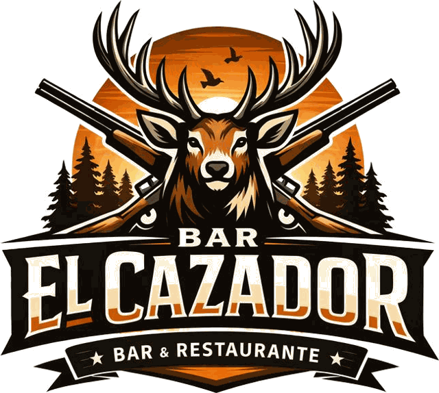

← Volver a la carta
Postres de la casa
✦
Profiteroles rellenos de nata
4,50 €
Coulant de chocolate con helado de vainilla
5,50 €
Flan de queso curado con nata y caramelo
4,50 €
Tarta de queso casera con sirope de frutos rojos
5,50 €
← Volver a la carta
Reservas:
978 09 25 31
Instagram
@barelcazadorvillel